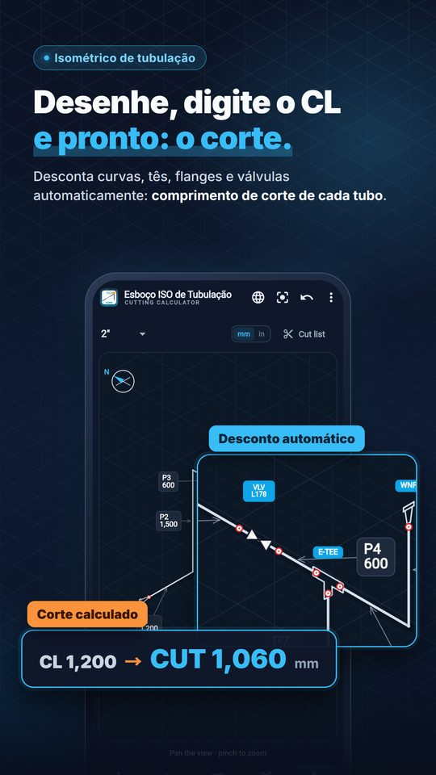

Para encanadores industriais, caldeiraria e supervisores de tubulação
Desenhe o isométrico de tubulação
e tenha cada corte
Pipe ISO Calculator é um app para encanador industrial em obra e oficina: desenhe a linha numa grade isométrica, informe as cotas de centro (CL) e o app desconta as conexões para dar o comprimento de corte (CUT) de cada tubo. Também calcula offset de 45°, offset rolado, offset de tubos paralelos e corte de curva em gomos.

Isométrico, lista de corte e cálculos de obra em um só app
Principais funções
Comprimento de corte (CUT)
Informe as cotas CL e obtenha o corte com descontos de conexões ASME B16.9 de topo e B16.11 encaixe/rosca, até 24".
Isométrico de tubulação
Desenhe na grade ISO, inclua curvas, tês, reduções, flanges, válvulas e olets e confira soldas e a lista de corte.
Offsets e gomos
Offset de 45°, rolado e 90°+45°, offset de 2 a 4 tubos paralelos e corte de curva em gomos.
Grátis e Pro
Grátis
Curva em gomos, offsets 2D e exportação PDF/DXF podem ser usados 5 vezes por semana cada. Desenhar, editar isométricos e consultar a tabela de conexões não gasta usos.
Pro
Remove o limite semanal. Os planos disponíveis e o preço local aparecem no Google Play ao assinar ou comprar. Sem anúncios.
Os usos reiniciam toda segunda-feira às 00:00 no horário local. PDFs gratuitos não têm marca d’água. Idioma do app: português.
Onde ajuda
Calcular descontos à mão na obra é lento e fácil de errar. Desenhe a linha uma vez e o app mantém todas as cotas CL e CUT juntas.
Compartilhe o isométrico e a lista de corte em PDF com a oficina, o encarregado ou o cliente, ou exporte DXF para abrir no CAD. Unidades em mm ou pé-polegada com frações de 1/16".
Buscas: app isométrico de tubulação, calculadora de tubulação, calculadora de corte de tubo, offset de tubulação, encanador industrial
Aviso
O app ajuda na conferência em campo. Antes de fabricar e soldar, siga sempre os desenhos aprovados, especificações, normas aplicáveis, dados do fabricante e seu supervisor.